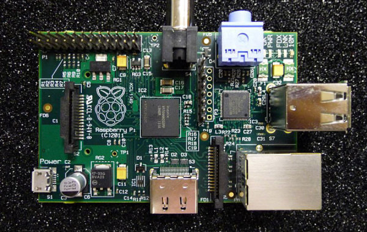

I hate to admit it, but this is the second, or possibly third time that I’ve forgotten the password for my raspberry pi… I know that there are ways to reset my password, but most of them assume that the pi in question is attached to a monitor, and my pi is several feet from the nearest monitor. So, without further ado here is how to reset the password on your raspberry pi.

Unplug your pi and remove the SD card
Insert the SD card into a working computer that you have root access on
As root edit the following file on your SD card:
eg:
It’s very important that you DON’T EDIT THIS FILE ON YOUR OWN COMPUTER. Things could get messy if you do that
Locate the line that starts with pi and replace the text between the first and second : with the output of the following command:
If you’re lazy you can use the following password hash:
$1$salty$SzJsU4qDcXp536Acnlp6I.
This will make the password for the pi user password
Eject the SD card and put it back in your pi and let it boot up.
ssh into your pi and change the password to something else immediately. You can do this by running:
and giving it the password you generated in step 4
REMEMBER THE NEW PASSWORD YOU JUST CREATED
Well first of all, how do you think your computer knows your password? It would be silly to have it stored somewhere as it is, since that would make it pretty easy for someone to steal if they ever had access to your machine. Instead the computer stores it as a hash. That is, it takes the password and mangles it in a specific and repeatable way to produce password hash. The key part of the mangling process is that it’s one way. There’s no figuring out what the input is if your just have the output. When you give your computer the password at login it hashes it to see if it matches the one it has stored. On linux, these password hashes are stored in /etc/shadow. What we’ve done is change the stored password hash to something we new.